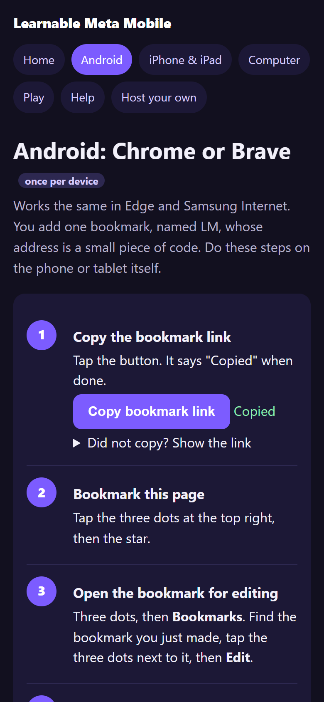
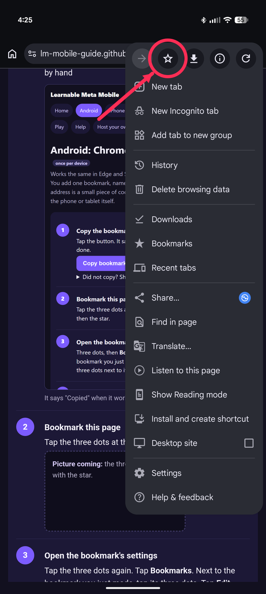
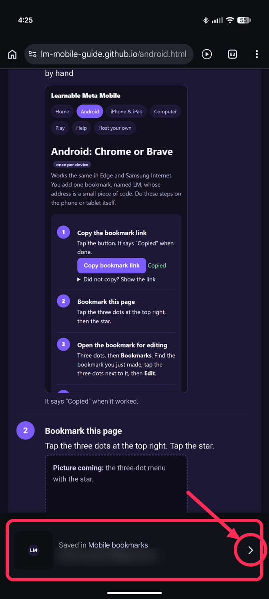
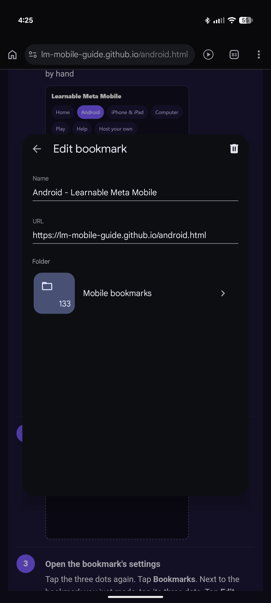
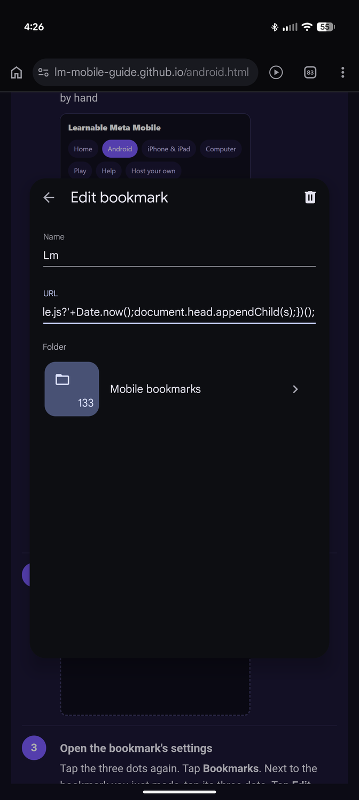
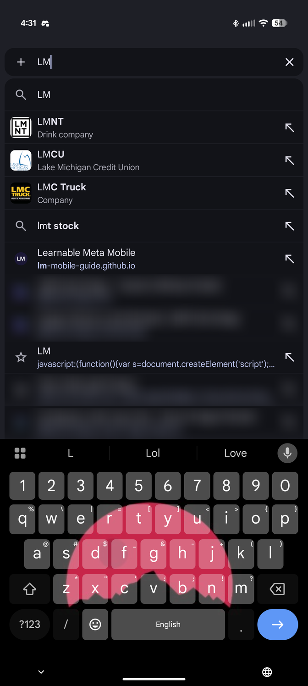

Chrome or Brave
Open this page in Chrome or Brave on your phone or tablet. Five steps, once.
Copy the link
Nothing happened? Tap here to see the link and copy it by hand

Bookmark this page
Tap the three dots at the top right. Tap the star.


Open the bookmark's settings
Fastest: tap the "Saved in Mobile bookmarks" bar from step 2 while it is still showing.
If it is gone: tap the three dots again. Tap Bookmarks. Next to the bookmark you just made, tap its three dots. Tap Edit.

Change the name and the address
Name: type LM.
Address: delete everything, then hold your finger on the box and tap Paste.
Tap the back arrow. It is saved.

Check that the address starts with javascript:. If your phone removed that part, do this instead: on a computer, open this page in Chrome signed in to the same Google account, press Ctrl+Shift+B, and drag this button onto the bookmarks bar: LM. It appears on your phone by itself.
Try it
Go to www.geoguessr.com. Tap the address bar. Type LM. Tap the LM bookmark in the list (it has a star).
You should see "Learnable Meta loaded" and a round LM button.


Always start it from the address bar. Opening it from the Bookmarks list does nothing.